F1=1000;
B1=200;
Fs=16000;
r=exp(-pi*B1/Fs);
theta = 2*pi*F1/Fs;
N = 256;
Hw=zeros(N,1);
coef1 = 2*r*cos(theta);
coef2 = r^2;
for j=-N/2:N/2
w = 2*pi*j/N;
compl = exp(-i*w);
Hw(j+N/2+1) = 1/(1-coef1*compl+coef2*compl*compl);
end
x = zeros(N,1);
x(N/2) = 1;
y = zeros(N,1);
for n=1:N
if(n==1)
y(n) = x(n);
elseif(n==2)
y(n) = coef1*y(n-1) + x(n);
else
y(n) = x(n) + coef1*y(n-1) - coef2*y(n-2);
end
end
h = y;
figure(1);
subplot(2,1,1);
plot(h);
title('Impulse Response of 2-pole resonator');
xlabel('n+128');
subplot(2,1,2);
plot(20*log10(abs(Hw)));
title('Magnitude Response of 2-pole resonator | log scale');
ylabel('20log(|H(w)|)');
xlabel('frequency');
F0 = 150;
T0 = round(1/F0);
t = 0:1/Fs:1;
imptrain = zeros(size(t));
imptrain(1:Fs/F0:end) = 1;
y = zeros(8000,1);
for n=1:8000
if(n==1)
y(n) = imptrain(n);
elseif(n==2)
y(n) = coef1*y(n-1) + imptrain(n);
else
y(n) = imptrain(n) + coef1*y(n-1) - coef2*y(n-2);
end
end
figure(2);
plot(y(1:2048));
xlabel('n');
title('Filter response to impulse train');
y1 = resonator2poleimpout(300, 100, 120);
y2 = resonator2poleimpout(1200, 200, 120);
y3 = resonator2poleimpout(300, 100, 180);
y4 = resonator2poleimpout(1200, 200, 180);
figure(3);
subplot(2,2,1);
plot(y1(1:2048));
title('F1=300, B1=100, F0=120');
xlabel('n');
subplot(2,2,2);
plot(y2(1:2048));
title('F1=1200, B1=200, F0=120');
xlabel('n');
subplot(2,2,3);
plot(y3(1:2048));
title('F1=300, B1=100, F0=180');
xlabel('n');
subplot(2,2,4);
plot(y4(1:2048));
title('F1=1200, B1=200, F0=180');
xlabel('n');
[ya120 ha120] = resonator6poleout(730, 1090, 2440, 100, 120);
[ya220 ha220] = resonator6poleout(730, 1090, 2440, 100, 220);
figure(4);
subplot(3,1,1);
plot(abs(fft(ha120)));
title('magnitude response of the \a\ digital filter')
subplot(3,1,2);
plot(ya120(1:2048));
title('output of 120 Hz impulse train passed through \a\ filter')
subplot(3,1,3);
plot(ya220(1:2048));
title('output of 220 Hz impulse train passed through \a\ filter')
[yi120 hi120] = resonator6poleout(270, 2290, 3010, 100, 120);
[yi220 hi220] = resonator6poleout(270, 2290, 3010, 100, 220);
figure(5);
subplot(3,1,1);
plot(abs(fft(hi120)));
title('magnitude response of the \i\ digital filter')
subplot(3,1,2);
plot(yi120(1:2048));
title('output of 120 Hz impulse train passed through \i\ filter')
subplot(3,1,3);
plot(yi220(1:2048));
title('output of 220 Hz impulse train passed through \i\ filter')
[yu120 hu120] = resonator6poleout(300, 870, 2440, 100, 120);
[yu220 hu220] = resonator6poleout(300, 870, 2440, 100, 220);
figure(6);
subplot(3,1,1);
plot(abs(fft(hu120)));
title('magnitude response of the \u\ digital filter')
subplot(3,1,2);
plot(yu120(1:2048));
title('output of 120 Hz impulse train passed through \u\ filter')
subplot(3,1,3);
plot(yu220(1:2048));
title('output of 220 Hz impulse train passed through \u\ filter')
Tw = 0.01;
Lw = Tw*16000;
wrect = rectwin(Lw);
whamm = hamming(Lw);
ya1 = zeros(8000,1);
ya1(1:1:Lw) = ya120(4001:1:4000+Lw).*wrect(1:1:Lw);
Ya1 = abs(fft(ya1));
ya2 = zeros(8000,1);
ya2(1:1:Lw) = ya120(4001:1:4000+Lw).*whamm(1:1:Lw);
Ya2 = abs(fft(ya2));
figure(7);
subplot(3,1,1);
plot(abs(fft(ya120)));
title('Magnitude response of the signal1 without windowing | Twin=10ms')
subplot(3,1,2);
plot(Ya1);
title('Magnitude response of the rectangular windowed signal')
subplot(3,1,3);
plot(Ya2);
title('Magnitude response of the hamming windowed signal')
yi1 = zeros(8000,1);
yi1(1:1:Lw) = yi220(4001:1:4000+Lw).*wrect(1:1:Lw);
Yi1 = abs(fft(yi1));
yi2 = zeros(8000,1);
yi2(1:1:Lw) = yi220(4001:1:4000+Lw).*whamm(1:1:Lw);
Yi2 = abs(fft(yi2));
figure(8);
subplot(3,1,1);
plot(abs(fft(yi120)));
title('Magnitude response of the signal2 without windowing | Twin=10ms')
subplot(3,1,2);
plot(Yi1);
title('Magnitude response of the rectangular windowed signal')
subplot(3,1,3);
plot(Yi2);
title('Magnitude response of the hamming windowed signal')
Tw = 0.04;
Lw = Tw*16000;
wrect = rectwin(Lw);
whamm = hamming(Lw);
ya1 = zeros(8000,1);
ya1(1:1:Lw) = ya120(4001:1:4000+Lw).*wrect(1:1:Lw);
Ya1 = abs(fft(ya1));
ya2 = zeros(8000,1);
ya2(1:1:Lw) = ya120(4001:1:4000+Lw).*whamm(1:1:Lw);
Ya2 = abs(fft(ya2));
figure(9);
subplot(3,1,1);
plot(abs(fft(ya120)));
title('Magnitude response of the signal1 without windowing | Twin=40ms')
subplot(3,1,2);
plot(Ya1);
title('Magnitude response of the rectangular windowed signal')
subplot(3,1,3);
plot(Ya2);
title('Magnitude response of the hamming windowed signal')
yi1 = zeros(8000,1);
yi1(1:1:Lw) = yi220(4001:1:4000+Lw).*wrect(1:1:Lw);
Yi1 = abs(fft(yi1));
yi2 = zeros(8000,1);
yi2(1:1:Lw) = yi220(4001:1:4000+Lw).*whamm(1:1:Lw);
Yi2 = abs(fft(yi2));
figure(10);
subplot(3,1,1);
plot(abs(fft(yi120)));
title('Magnitude response of the signal2 without windowing | Twin=40ms')
subplot(3,1,2);
plot(Yi1);
title('Magnitude response of the rectangular windowed signal')
subplot(3,1,3);
plot(Yi2);
title('Magnitude response of the hamming windowed signal')
Tw = 0.1;
Lw = Tw*16000;
wrect = rectwin(Lw);
whamm = hamming(Lw);
ya1 = zeros(8000,1);
ya1(1:1:Lw) = ya120(4001:1:4000+Lw).*wrect(1:1:Lw);
Ya1 = abs(fft(ya1));
ya2 = zeros(8000,1);
ya2(1:1:Lw) = ya120(4001:1:4000+Lw).*whamm(1:1:Lw);
Ya2 = abs(fft(ya2));
figure(11);
subplot(3,1,1);
plot(abs(fft(ya120)));
title('Magnitude response of the signal1 without windowing | Twin=100ms')
subplot(3,1,2);
plot(Ya1);
title('Magnitude response of the rectangular windowed signal')
subplot(3,1,3);
plot(Ya2);
title('Magnitude response of the hamming windowed signal')
yi1 = zeros(8000,1);
yi1(1:1:Lw) = yi220(4001:1:4000+Lw).*wrect(1:1:Lw);
Yi1 = abs(fft(yi1));
yi2 = zeros(8000,1);
yi2(1:1:Lw) = yi220(4001:1:4000+Lw).*whamm(1:1:Lw);
Yi2 = abs(fft(yi2));
figure(12);
subplot(3,1,1);
plot(abs(fft(yi120)));
title('Magnitude response of the signal2 without windowing | Twin=100ms')
subplot(3,1,2);
plot(Yi1);
title('Magnitude response of the rectangular windowed signal')
subplot(3,1,3);
plot(Yi2);
title('Magnitude response of the hamming windowed signal')
Warning: Integer operands are required for colon operator when used as index
Warning: Unable to interpret TeX string "output of 220 Hz impulse train passed through
\a\ filter"
Warning: Unable to interpret TeX string "output of 120 Hz impulse train passed through
\a\ filter"
Warning: Unable to interpret TeX string "magnitude response of the \a\ digital filter"
Warning: Unable to interpret TeX string "output of 220 Hz impulse train passed through
\i\ filter"
Warning: Unable to interpret TeX string "output of 120 Hz impulse train passed through
\i\ filter"
Warning: Unable to interpret TeX string "magnitude response of the \i\ digital filter"
Warning: Unable to interpret TeX string "output of 220 Hz impulse train passed through
\u\ filter"
Warning: Unable to interpret TeX string "output of 120 Hz impulse train passed through
\u\ filter"
Warning: Unable to interpret TeX string "magnitude response of the \u\ digital filter"
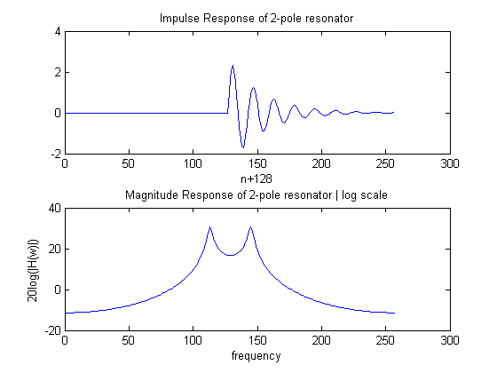 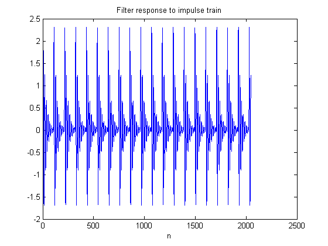 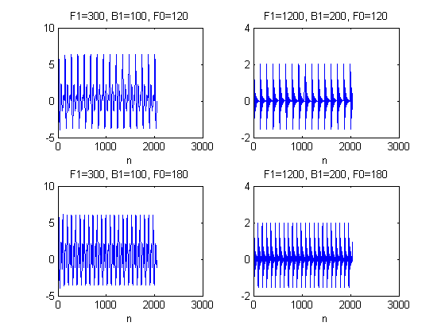 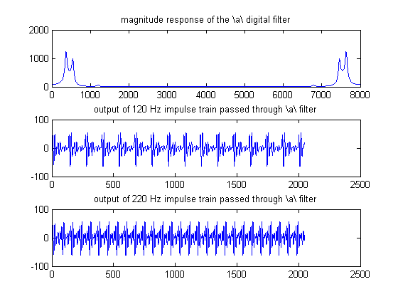 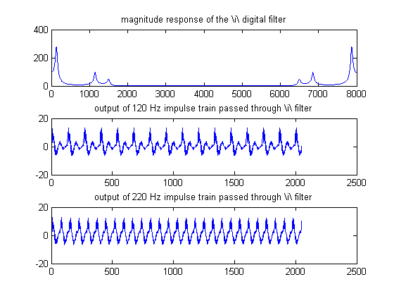 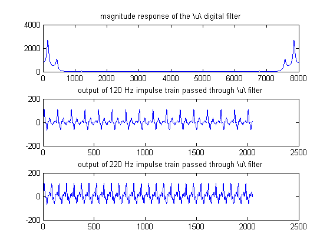 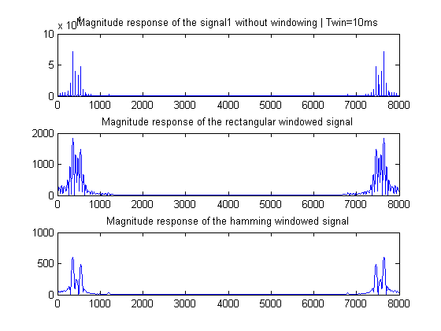 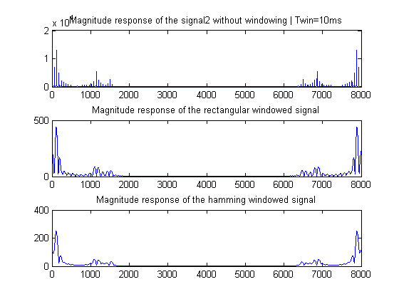 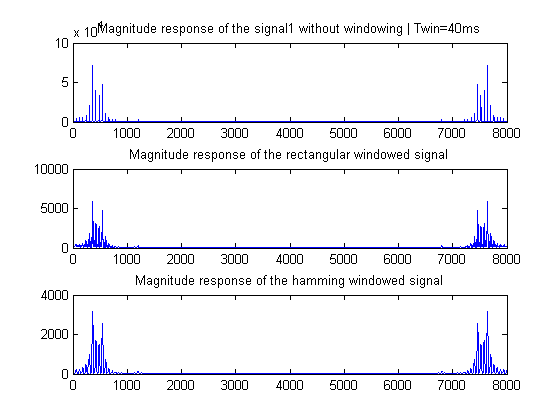 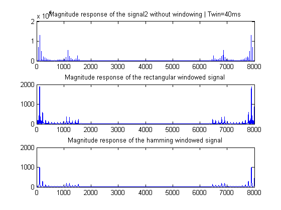 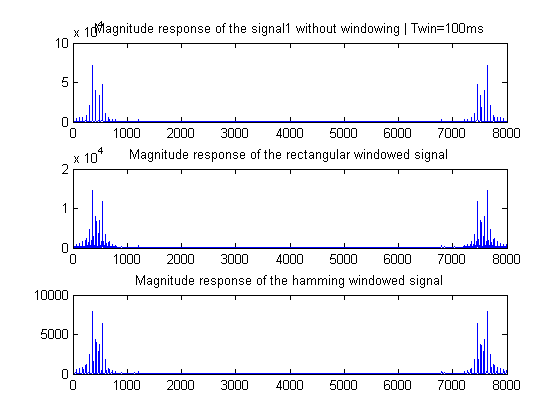 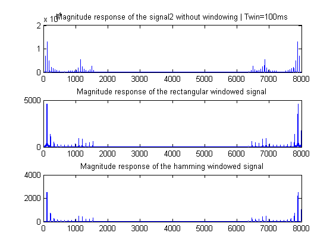